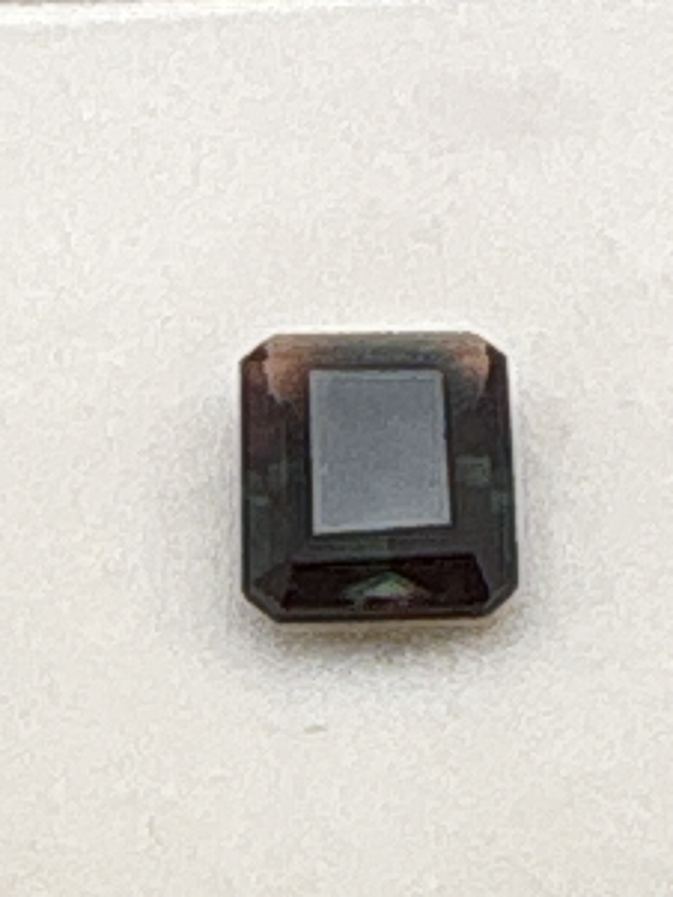

The Gem Drawer › No. 17

A 9 x 7 mm emerald cut flashing green and copper-red by turns.
| Catalogue no. | #17 |
|---|---|
| As labeled | Andesine (see important notes on possible treatment) |
| Shape / cut | Emerald cut ("e/c") |
| Weight | 1.8 ct |
| Measurements | 9 x 7 |
| Colour | Color-change: green with copper-red/orange flashes depending on angle |
| Clarity / condition | Not recorded |